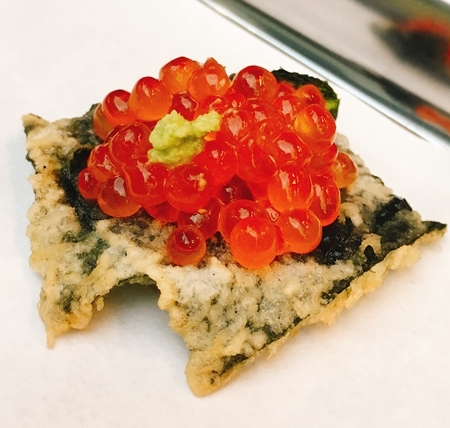
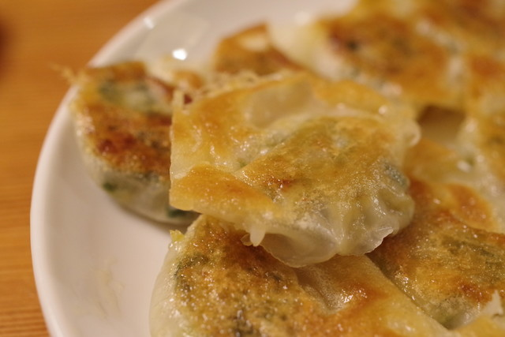
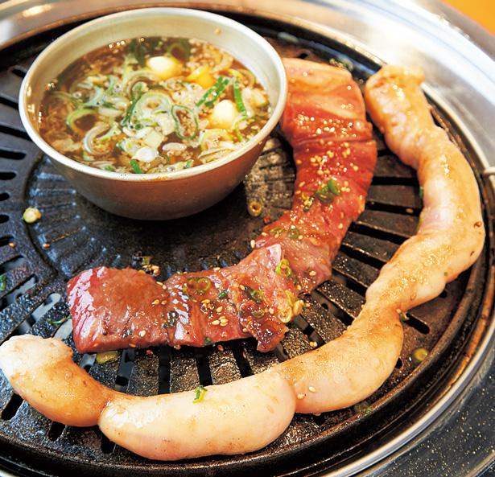

オススメ居酒屋

天ぷらとワイン 大塩
目の前で天ぷらを揚げてくれるお店は、高級な印象がありますが
コスパ最高で揚げたてをすぐ食べられる！
それとあわせて飲むスパークリングワインは、最高です！
もちろん、ビールやハイボール、サワーもあるのでワインが苦手な人でも気軽に入れます。

天平 ひとくち餃子発祥店
１種類の餃子しかないお店。
1人前20個をペロリと食べれてしまうくらい
衝撃的なうまさで少しピリ辛なので、ビールがすすんでしまう。
大変混むのでおかわりは、１回までらしいです。喋りながらゆっくり食べてると
店員のおじさんに冷めるから早く食べてと怒られる人もいますので気をつけて下さい。笑

ソソカルビ 牛天
ソウル本場で有名なドラム缶スタイルのお店。
マルチョウ１本焼き、ハラミ１本焼きは最高！！
ここの食べ方は、鉄板に置いてある秘伝のタレの入ったボールに
焼けたお肉をいれていき、タレを染み込ませてから食べる！そして、ビールで流し込む！
これが最っ高にうまいです！！